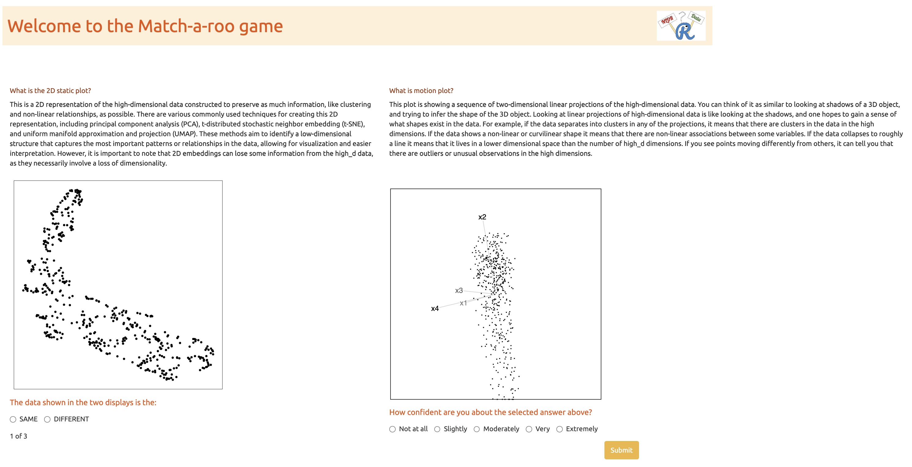
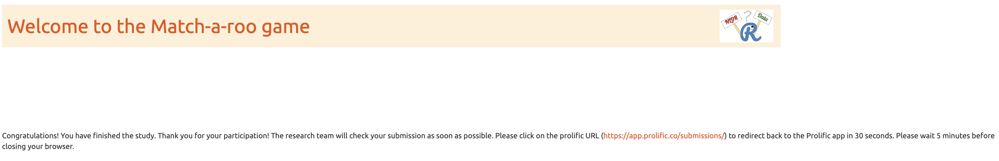

| Script | Description |
|---|---|
| additional_functions.R | Helper functions to render the main paper. |
| 01_attention_check_data_structures.R | Function to generate three- and four- Gaussian clusters data for attention check. |
| 01_data_structure_components.R | Functions to generate data structure components for non-attention check. |
| 02_data_structures.R | Functions to generate three clusters data structure for non-attention check. |
| 03_exp_design_with_method_and_distance_factor.R | Creates the experimental design, varying NLDR method and distance scale factors. |
| 04_exp_design_with_new_ds_factors.R | Extends the experimental design to include additional distance scale factor. |
| 05_gen_clust3_attention_check_data.R | Generates three-cluster data for attention check. |
| 05_gen_cluster3_high_d_data.R | Generates three-cluster data with medium-large distance scale factor. |
| 06_gen_clusters3_with_diff_dist.R | Generates three-cluster data with varying inter-cluster distance scale factors. |
| 09_gen_clusters_merge_all_data.R | Merges all generated cluster data (attention and non-attention check) into a single combined dataset. |
| 10_gen_embeddings.R | Computes multiple NLDR embeddings for specific distance scale factor. |
| 11_comb_emb_default_data.R | Combines NLDR embeddings for all distance scale factors. |
| 12_comb_data.R | Merge all NLDR embeddings generated for attention and non-attention check. |
| 13_data_processing_method_ds_factor_missings.R | Processes collected experimental data and generates the file, containing all relevant details for the same data structure shown in both displays. |
| 13_data_processing_method_ds_factor.R | Processes collected experimental data and generates the file, containing all relevant details for the same data structure shown in both displays. |
| 17_compute_distance_btw_centroids.R | Computes different distance metrics between cluster in the high-dimensional space. |
| 19_find_which_replicates_missing.R | Identifies missing responses across experimental conditions. |
| pwr_analysis_umap_0.1_0.6.R | Power analysis to decide the number of responses needed to detect the difference between UMAP 0.1 and 0.6 distance scale factors. |
| pwr_analysis_tsne_0.1_0.6.R | Power analysis to decide the number of responses needed to detect the difference between tSNE 0.1 and 0.6 distance scale factors. |
Appendix B — Appendix to “Perception and Misperception of Clustering in Nonlinear Dimension Reduction: A User Study”
B.1 Scripts
B.2 Data sets
Table B.2 summarizes the three-cluster data sets used in the experiment. Each data set was generated using the cardinalR package (Gamage et al. 2025) and comprises three clusters with distinct structures. The collection of structures spans a wide range of nonlinear, curved, and density-based configurations in 4\text{-}D space, providing controlled yet varied settings for assessing perceptual differences across NLDR methods. All data sets used in this experiment are available at github.com/JayaniLakshika/Monash_PhD_thesis/data/vis-exp/high_d_data_three_clust_all.rds.
| Data structure | Cluster1 | Cluster2 | Cluster3 |
|---|---|---|---|
| three_clust_01 | curv | elliptical | blunted_cone |
| three_clust_02 | s_curve | cube | pyramid_rectangular_base |
| three_clust_03 | curvy_cylinder | hemisphere | pyramid_triangular_base |
| three_clust_04 | curv2 | Gaussian | filled_hexagonal_pyramid |
| three_clust_05 | nonlinear_hyperbola | elliptical | blunted_cone |
| three_clust_06 | crescent | cube | pyramid_rectangular_base |
| three_clust_07 | nonlinear_hyperbola2 | hemisphere | pyramid_triangular_base |
| three_clust_08 | conic_spiral | Gaussian | filled_hexagonal_pyramid |
| three_clust_09 | helical_hyper_spiral | cube | blunted_cone |
| three_clust_10 | spherical_spiral | Gaussian | pyramid_triangular_base |
| three_clust_11 | curv | elliptical | pyramid_rectangular_base |
| three_clust_12 | s_curve | hemisphere | filled_hexagonal_pyramid |
| three_clust_13 | curvy_cylinder | cube | blunted_cone |
| three_clust_14 | curv2 | Gaussian | pyramid_triangular_base |
| three_clust_15 | nonlinear_hyperbola | elliptical | pyramid_rectangular_base |
| three_clust_16 | crescent | hemisphere | filled_hexagonal_pyramid |
| three_clust_17 | nonlinear_hyperbola2 | cube | blunted_cone |
| three_clust_18 | conic_spiral | Gaussian | pyramid_triangular_base |
| three_clust_19 | helical_hyper_spiral | hemisphere | filled_hexagonal_pyramid |
| three_clust_20 | spherical_spiral | elliptical | blunted_cone |
| three_clust_21 | curv | Gaussian | pyramid_rectangular_base |
| three_clust_22 | s_curve | cube | pyramid_triangular_base |
| three_clust_23 | curvy_cylinder | hemisphere | filled_hexagonal_pyramid |
| three_clust_24 | curv2 | elliptical | blunted_cone |
| three_clust_25 | nonlinear_hyperbola2 | Gaussian | pyramid_rectangular_base |
| three_clust_26 | crescent | cube | pyramid_triangular_base |
| three_clust_27 | nonlinear_hyperbola2 | hemisphere | filled_hexagonal_pyramid |
| three_clust_28 | conic_spiral | elliptical | blunted_cone |
| three_clust_29 | Gaussian | Gaussian | Gaussian |
| three_clust_30 | Gaussian | Gaussian | Gaussian |
Animations of the 4\text{-}D tours that were used for the study’s non-attention check SAME trials, non-attention check DIFFERENT trials, and attention-check trials are available on YouTube at the links given in Table B.3, Table B.4, and Table B.5.
| Data structure | URL |
|---|---|
| three_clust_19 | youtube.com/shorts/fb-gQ064JdI |
| three_clust_20 | youtube.com/shorts/5Lm03LMiC2s |
| three_clust_21 | youtube.com/shorts/BmKzrqTWUbI |
| three_clust_22 | youtube.com/shorts/wrn6lj7-RrQ |
| three_clust_23 | youtube.com/shorts/AWgG3tbfYpA |
| three_clust_24 | youtube.com/shorts/JR_6QorZjj8 |
| three_clust_25 | youtube.com/shorts/gKEZGGZcE6c |
| three_clust_26 | youtube.com/shorts/Ar7OAtuwWsc |
| three_clust_27 | youtube.com/shorts/BXcLP-qqPWo |
| three_clust_28 | youtube.com/shorts/e6cP4jC2xGM |
| Data structure | URL |
|---|---|
| three_clust_29 | youtube.com/shorts/bqZporzHQ5U |
| three_clust_30 | youtube.com/shorts/onAg2AgT2P4 |
B.3 2\text{-}D NLDR layouts
All 2\text{-}D NLDR layouts used in the experiment are available in the supplementary repository: github.com/JayaniLakshika/Monash_PhD_thesis/figures/vis-exp/layouts. These include all 2\text{-}D embeddings generated under different NLDR methods (tSNE, UMAP, PHATE, TriMAP, and PaCMAP) with default hyper-parameter settings for the simulated 4\text{-}D data sets. All embedding data used to generate the 2\text{-}D NLDR layouts are available at github.com/JayaniLakshika/Monash_PhD_thesis/data/vis-exp/embedding_data_three_clust_all.rds.
B.4 Distance metrics
To quantify cluster separation in the high-dimensional space, we considered several inter-cluster distance metrics that capture different aspects of separability (Figure B.1). Together, these metrics reflect both global separation between clusters and more local boundary proximity. All distance metrics were computed using standard implementations provided by the fpc (Hennig 2024) R package.
Because the metrics operate on different scales and respond differently to changes in cluster geometry, all distance-based measures were min–max scaled prior to analysis. Several metrics were additionally transformed (using exponential, square-root, or squared transformations) to improve comparability across datasets. These transformations were not intended to alter the interpretation of the measures, but rather to reduce strong nonlinearities and place the metrics on roughly similar scales.
![A matrix of pairwise plots showing relationships among six cluster separation metrics. Each row and column corresponds to one metric. The diagonal panels display the distribution of each metric, shown as smooth density curves. The lower triangular panels contain scatterplots comparing pairs of metrics, with points colored by distance scaling factor levels labeled S, SM, M, ML, and L. The scatterplots show strong positive associations across most metric pairs, with points forming tight upward-sloping clouds. The upper triangular panels display Pearson correlation coefficients, many of which are large and positive, with asterisks indicating statistically significant correlations. Overall, the figure shows that all metrics vary consistently with distance scaling, while still capturing slightly different aspects of cluster separation.](B-appB_files/figure-html/fig-distance-metrics-1.png)
***’). Metrics show high positive correlation, confirming that they capture consistent structural variation. The BW ratio and exponentiated minimum distance were chosen for the main analysis because they provide complementary summaries of global cluster separation and local boundary distance.
As shown in Figure B.1, most metric pairs are strongly positively correlated, indicating that they respond similarly as cluster separation increases. This suggests that the distance scaling used in the simulations effectively controls separability and that the metrics capture related structural changes. The scatterplots also show differences in sensitivity across scaling levels, with some metrics responding more clearly at smaller separations and others providing better discrimination at larger separations.
Based on these patterns, we selected the BW ratio and the exponentiated scaled minimum distance for the main analyses. The BW ratio captures overall separation by contrasting between- and within-cluster dispersion, while the exponentiated minimum distance focuses on the closest boundaries between clusters. Both measures are strongly correlated with the other metrics (upper panels of Figure B.1) but reflect complementary aspects of separability, allowing us to assess whether perceptual accuracy is driven more by global structure, local proximity, or both.
B.5 Determining the number of responses per treatment
Before running the main experiment, we examined how many responses were needed for each treatment (method × distance factor) to reliably detect meaningful differences in performance. Rather than attempting to cover all possible combinations, we focused on representative comparisons that are most informative for the study. In particular, we compared UMAP and tSNE under two distance conditions (0.1 and 0.6), which showed clear differences in correct identification rates in the pilot data.
Using pilot estimates of the correct proportion, we conducted a simulation-based power analysis based on a difference in proportions framework. The baseline probability was taken from the estimated performance at the smaller distance factor (0.1), and a range of effect sizes was explored. We focused on an effect size of approximately 0.22, which corresponds to a change of about 20 percentage points in correct identification and reflects a perceptually meaningful improvement in the ability to distinguish whether two views show the same data.
![Two side-by-side line plots show detection probability as a function of the number of responses per condition. Panel (a) corresponds to tSNE and panel (b) to UMAP. In both panels, the x-axis shows the number of responses per condition, ranging from about 10 to 100, and the y-axis shows detection probability from 0 to 1. Multiple lines are shown in each panel, corresponding to different effect sizes, with darker lines indicating larger effects. Detection probability increases as the number of responses increases for all effect sizes. A horizontal reference line marks a detection probability of 0.8, and a vertical dashed line indicates the approximate number of responses required to reach this level for a moderate–large effect (around 0.22). UMAP reaches this threshold with fewer responses (around 70) than tSNE (around 80), indicating higher sensitivity and lower variability for UMAP at this effect size.](B-appB_files/figure-html/fig-num-res-detect-1.png)
The results show that (Figure B.2), for this effect size, UMAP reaches a detection probability of 0.8 with around 70 responses per condition, while tSNE requires approximately 80 responses to achieve the same level of power. This difference reflects the higher variability observed in tSNE responses compared to UMAP. Importantly, these results indicate that the number of responses collected in the main experiment (typically between 75 and 80 per condition) is sufficient to detect moderate to large effects for both methods.
B.6 Data collection process
Recruit participants
Subjects were recruited from Prolific (Palan and Schitter 2018), an online platform, to evaluate the trials. The study expects that the participants are uninvolved judges with no prior knowledge of the data to avoid inadvertently affecting results. Potential subjects needed with fluent in English and have completed at least 10 Prolific studies with a 98\% approval rate. The Prolific server only considers participants who are age 18 and older.
All subjects were trained using three example displays to orient them to the evaluation trials and provided introductory materials. All subjects who completed the task were compensated 9.96 GBP per hour for their time via the Prolific payment system.
Web application to collect responses
The survey web application, Match-a-roo, is designed to collect survey responses and demographics using the shiny (Chang et al. 2025) package in R. Each subject had access to the survey via the shiny.io server. The first interface of the survey app contained an introduction, instructions for the survey (Figure B.4), a consent form (Figure B.5), and buttons to access, for example, actual trials. Participants can try three examples prior to the study where the answers were not recorded (Figure B.6). The subjects were first asked for their consent to the responses being used for analysis.
A total of 1905 evaluations from 127 participants has been collected.
After giving consent, the participant can start the trials. Two visual displays of data are shown where the data may be the same or different (Figure B.7). One of the visual displays is a 2\text{-}D NLDR plot, and the other is a tour made of many 2\text{-}D plots. The participants were asked to decide whether that data was the same in both displays and to report their confidence about their choice and any comments about the answer.
When the participants completed the twenty evaluations, they were asked for their demographics which included preferred pronoun, the highest level of education achieved, their age category, whether they used principal component analysis in their work, and whether they applied NLDR techniques such as tSNE and UMAP (Figure B.8). Finally, the participants need to click on prolific URL (https://app.prolific.co/submissions/) to redirect back to the Prolific app (Figure B.9).
![A flow diagram showing the experimental workflow implemented in the Shiny application. The process begins when a participant starts the study. The app connects to a Google Sheet containing subject IDs and checks which IDs are available by reading a column that indicates whether an ID has been used. One eligible subject ID is randomly selected and marked as used, ensuring it cannot be assigned again. The assigned subject ID is then used to link the participant to the experiment design and the corresponding high-dimensional and embedding data. The participant is shown a sequence of trials, where each trial displays both a tour of linear projections and two-dimensional NLDR embeddings based on the assigned data. After each trial, the participant records their response, which is saved to a results Google Sheet. Once all trials are completed, the participant fills out a demographics questionnaire, and these responses are saved to a separate demographics Google Sheet. The diagram shows this process proceeding sequentially from study start to completion.](../figures/vis-exp/experiment.png)
. The first interface of the survey app contained an introduction, instructions for the survey (@fig-intro-page), a consent form (@fig-consent), and buttons to access, for example, actual trials. Participants can try three examples prior to the study where the answers were not recorded (@fig-example). The subjects were first asked for their consent to the responses being used for analysis.](../figures/vis-exp/introduction.png)


![A screenshot of the main trial interface of the survey application. Two visual displays are shown side by side. One display shows a two-dimensional nonlinear dimensionality reduction (NLDR) embedding, while the other shows a tour consisting of many two-dimensional linear projections of the same or different high-dimensional data. Below the visualizations, participants are asked to indicate whether the data shown in the two displays are the same or different. Additional interface elements allow participants to report their confidence in the decision and to enter optional comments before submitting the response.](../figures/vis-exp/attempt.png)


Once a participant starts the study (Figure B.3), the “eligibility_subject_IDs” Google Sheet is connected and read in the Shiny app to identify which subject IDs have not yet been assigned to anyone, as indicated by the “used” column. If the “used” column is marked as NA, it means that the subject ID has not been assigned.
After identifying the eligible subject IDs, one is randomly assigned to the participant, and “1” is recorded in the “used” column corresponding to that subject ID. This subject ID will later assist in connecting the experiment design, high-dimensional data, and embedding data.
Once a subject ID is allocated to a participant, the experiment design data are loaded, and the relevant attempts, data structure, and methods are presented to the participant. This process continues until the participant completes all attempts. After determining the data structure and methods, the relevant high-dimensional and embedding data is loaded from “high_d_data_three_clust_all.rds” and “embedding_data_three_clust_all.rds”, respectively, and displayed in both tour and 2\text{-}D NLDR plots.
Once the participant records their answers, a new row is added to the “result_df” Google Sheet with their responses. This continues until the participant finishes the study. Finally, after completing the evaluations, participants are asked to fill out a demographics questionnaire. Their responses are then recorded in a new row of the “demographic_details” Google Sheet.
B.7 Variability across data sets and subjects
Two sources of variability in the experimental design that are important to assess relative to the fitted model: data sets and subjects. Data sets are effectively treated as replicates in the experiment, providing random samples of a range of types of clusters. Humans have different perceptual skills which is why it is important to include a subject random effect in the model.
Across the data sets used in the experiment, the proportion of correct responses ranges from approximately 0.3 to 0.7 (Figure B.10 a). Because data sets were assigned at random, in a way unrelated to other factors in the experiment, this represents a source of variation that can safely be treated as as noise.
The proportion correct across subjects is symmetric and unimodal, reasonably consistent with the assumption that they are normally distributed random effects (Figure B.10 b). Some subjects performed extremely well, and others poorly. This is similar to what has been observed in other human subjects experiments involving visual tasks. A high score could be obtained by selecting SAME on each trial but this was not the case when all their data was examined.
![The figure has two panels summarizing variability in proportion correct. Panel (a) shows a plot of proportion correct for each data set, with values ranging approximately from 0.3 to 0.7. The proportions vary across data sets but cluster within a moderate range. Panel (b) shows a histogram of subjects’ proportion of correct responses. The horizontal axis is proportion correct, ranging from 0 to 1, and the vertical axis is the number of subjects. The distribution is roughly symmetric and unimodal, centered near 0.5. Most subjects cluster around the middle accuracy range, with fewer subjects at the lower and higher ends. A small number of participants perform notably better or worse than average, and no subject has perfect or zero accuracy.](B-appB_files/figure-html/fig-var-sum-1.png)
B.8 Analysis of results relative to data collection process
Data cleaning
The initial step in the data cleaning process involves the selection of subjects who have completed the requisite twenty trials, including the demographics and the attention check trial. Participants who exceeded the average time of 5-10 minutes were excluded, as determined from the pilot study. Following this, individuals who didn’t accurately detect the attention check trial were also removed. Furthermore, the attention check trials were removed, as they did not contribute to the further analyses. Finally, the collected data set is further refined by filtering out all the responses, which showed the same data structures in 2\text{-}D NLDR plot and tour.
Demographics
Along with the responses to the trials, we have collected a series of demographic information including preferred pronoun, age range category, education background, and previous experience in PCA and Non-linear dimension reduction techniques. Table B.6, Table B.7, Table B.8, Table B.9, and Table B.10 provide summaries of the demographic data.
The participants are fairly balanced in terms of pronouns, with similar proportions identifying as she/her (50.4\%) and he/him (48.0\%), and a small number identifying as they/them (1.6\%). Participants cover a wide age range, with most between 25 and 34 years old (35.4\%), followed by those aged 18-24 (20.5\%) and 35-44 (19.7\%). The sample has more younger and mid-adult age groups, while still including representation from older participants.
Most participants have completed an undergraduate degree (44.9\%) or a postgraduate qualification (26.8\%), with others reporting some undergraduate study (21.3\%). Only a small proportion did not complete high school. Prior experience with dimension reduction methods is limited: the majority report no previous experience with PCA (84.2\%) or nonlinear dimension reduction techniques (86.6\%). This suggests that most participants approached the task without strong prior familiarity, allowing the results to reflect general perceptual interpretation rather than expert knowledge.
| Pronoun | Period I | Period II | Total | % |
|---|---|---|---|---|
| he/him | 7 | 54 | 61 | 48.03 |
| she/her | 11 | 53 | 64 | 50.39 |
| they/them | 0 | 2 | 2 | 1.57 |
| Total | 18 | 109 | 127 | 100.00 |
| Age group | Period I | Period II | Total | % |
|---|---|---|---|---|
| 18 - 24 | 3 | 23 | 26 | 20.47 |
| 25 - 34 | 9 | 36 | 45 | 35.43 |
| 35 - 44 | 3 | 22 | 25 | 19.69 |
| 45 - 54 | 1 | 12 | 13 | 10.24 |
| Over 55 | 2 | 16 | 18 | 14.17 |
| Total | 18 | 109 | 127 | 100.00 |
| Education | Period I | Period II | Total | % |
|---|---|---|---|---|
| Completed some undergraduate courses | 4 | 23 | 27 | 21.26 |
| Did not complete high school | 0 | 4 | 4 | 3.15 |
| Higher degree master or doctorate | 3 | 31 | 34 | 26.77 |
| Prefer not to answer | 3 | 2 | 5 | 3.94 |
| Undergraduate degree (A bachelor) | 8 | 49 | 57 | 44.88 |
| Total | 18 | 109 | 127 | 100.00 |
| Experience with PCA | Period I | Period II | Total | % |
|---|---|---|---|---|
| No | 15 | 92 | 107 | 84.25 |
| Yes | 3 | 17 | 20 | 15.75 |
| Total | 18 | 109 | 127 | 100.00 |
| Experience with NLDR | Period I | Period II | Total | % |
|---|---|---|---|---|
| No | 15 | 95 | 110 | 86.61 |
| Yes | 3 | 14 | 17 | 13.39 |
| Total | 18 | 109 | 127 | 100.00 |